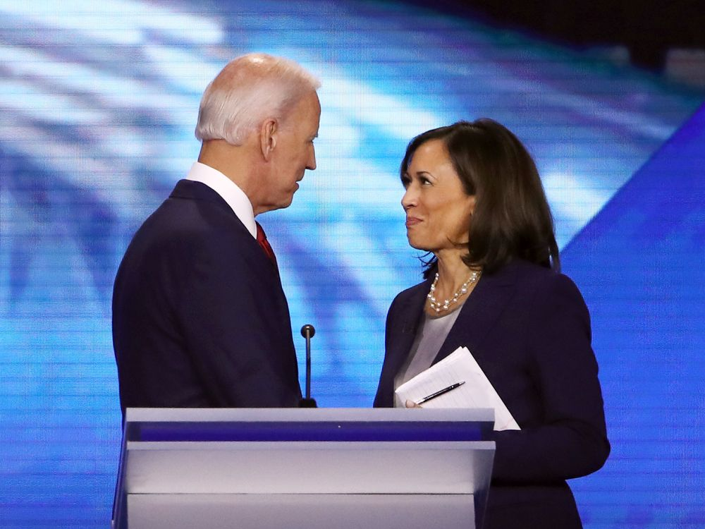

Is this pair of the tiger and the lion the perfect Machiavellian duo?
“Americans don't want to witness a food fight. They want to know how we're going to put food
on their table.”
These were the words that first catapulted Kamala Harris into the national spotlight during the
First Democratic Debate. Harris had launched her presidential bid in early 2019 in an effort to
challenge the highly polarizing, inefficient and corrupt incumbent: Donald Trump. But the
opportunity was so ripe, that she met with a crowded field of a total of 29 candidates, all of them
lashing out at Trump, taking advantage of a rather unhindered path to the White House in 2020.
Towards the end, Harris was, however, one of the top tier candidates in the race (as she most
infamously called herself), but Politics comes at its own cost, and by December, Harris had
suspended her Presidential campaign, only to come back to the race in August 2020, when Joe
Biden nominated her as his Vice Presidential candidate.
As a junior Senator from California, Harris has been vocal about a number of things, most
significantly her testy exchanges with Justice Kavanaugh, Attorney General William Barr,
Deputy Attorney General Rod Rosenstein and former Attorney General Jeff Sessions, who had
very famously told Harris,
“I am not able to be rushed this fast, it makes me nervous,"
Words, which I hope are quite self-explanatory.
But Biden’s choice of Harris can be deemed as a rather cunning political choice. Anyone
following the Presidential race will have known, Biden is quite the popular guy among almost
everyone, yet the major setbacks in his campaign come primarily from his gaffes, or even his
prolonged inability to speak at length with energy and enthusiasm, qualities one can attribute to
his age. And this is where Harris jumps in. Harris isn’t going to substantially boost the polls, but
rather she will gradually become the face of this campaign. Biden might be framing policy, using
his experience in every way possible but any clever person closer to the establishment knows
that the rallying part, the mobilizing part is something Harris is good at, and it is only logical that
she takes over it extending the campaign to the many, not the few.
Kamala Harris brings balance to the Biden administration, yet balance is a very tricky term open
to interpretation. Some say that a progressive liberal on the ticket with a centrist broadens the
base, while others argue that the nomination of the first Black, Indian American Vice President is
a huge morale boost for the Democratic establishment in a crucial political year. The most
important characteristic, however, is the achievement of the Machiavellian balance in the ticket.
Several years ago, in the 16 th century, when Machiavelli first wrote The Prince, he made a very
important observation- a quality significant to the harvesting of power- the balance between the
cunning and the aggressive, the political prowess and the populist- the need for the
conglomeration of the fox and the lion. It is true based on simple geographic demographics that
the combination of an old, centrist, liberal-minded white man with a rather young, black,
progressive woman born of immigrants is more representative of the USA than any ticket could
ever be.
Yet Kamala Harris comes with her issues, especially her being considered a “cop”, and her flip-
flops on policy, which sank her Presidential bid.
Critics have long argued that Harris’ tenure as District Attorney of California, and then-Attorney
General is badly scarred, citing her as not being “progressive enough”. However, if one were to
truly review her record, it speaks quite the opposite.
From the beginning of Harris’s career in the criminal justice system, she said she saw herself as a
progressive working within a system she wanted to change — “at the table where the decisions
are made.” Her most successful program as district attorney, “Back on Track,” allowed first-time
drug offenders, including drug dealers, to get a high school diploma and a job instead of prison
time. In one instance — her handling of California’s “three strikes” law — Harris was arguably
ahead of the time. Under the law, someone who committed a third felony could go to prison for
25 years to life, even if the third felony was a nonviolent crime. But Harris required that the San
Francisco district attorney’s office only charge for a third strike if the felony was a serious or
violent crime.

It is, however, important to note that at this point of time the landscape gradually began to
change. A number of prosecutors had risen to be far more progressive than what Harris was
doing in one of America’s most liberal states. This is part of the reason why many people were
rather disappointed with Harris’ tenure as Attorney General.
She implemented some reforms: expanded her “Back on Track” program to other parts of the
state. After Black Lives Matter took off, she introduced and expanded what her office described
as “first-of-its-kind training” to address racial bias as well as procedural justice — earning
praise from local newspapers. But these reforms come with their share of controversy too:
Harris’ office fought to release lesser prisoners from jails, and later went to arguing against the
release of an innocent man from jail. People close to Harris, however, have a different story to
tell, citing the fact that she wasn’t even remotely involved in these cases.
Another spectrum of critics go on to cite that she is a woman who is “tough on crime”, an
argument which makes perfect sense given her job as a prosecutor, but those same people go on
to accuse her of not holding the police accountable, part of which is also true. Yet the
fundamental problem with this argument is in her tenure as Attorney General, Harris was caught
in the strife between the general public and the police: being a prosecutor there was a huge
conflict, something which made her slow down, never stop completely. In that regard,
she made the California Department of Justice the first statewide agency to require body cameras
and even enforced “first of its kind law enforcement training.” The rhetoric about reform of the
Justice System in the States has become even more amplified when she joined the Senate.
She introduced a bail reform bill with Senator Rand Paul (Kentucky) that would encourage states
to reform or replace their bail systems. In a team-up with Senators Cory Booker (New Jersey)
and Tim Scott (South Carolina), Harris also introduced a bill that would for the first time make
lynching a federal crime. After the 2020 Black Lives Matter protests over the Minneapolis police
killing of George Floyd, Harris spoke favourably of shifting resources from law enforcement to
addressing the “root causes” of crime, such as poverty, education, and mental health issues.
Despite her being at the helm of the progressive movement to the White House now, there
remains a major problem with her policy, and also what she says now against what she has said
before. In the larger geopolitical context, however, that does not matter much given the table is
set in such a way that policy comes all on Biden’s plate, what Harris simply will have to do is
stand by it: something which might seem a little hard for her but not impossible. All anyone can
do right now is simply keep up hope (given it seems that Biden-Harris in their first week have
done more to prevent the spread of the virus than Trump has done since March).
Harris’ nomination is symbolic, and even though it doesn’t turn the scales much, it’s sad to see
that the first Black woman on a major Party’s ticket came only in the year 2020. But no one
should be surprised. Before Biden made an announcement, people had labelled her as being “too
ambitious”-something which everyone in Politics is and should be-and although the
announcement of her being in the ticket comes at the joy of many, it also invited the podium of
the Highest Office of the Land being used to call a woman “nasty”, and question her eligibility to
serve on the ticket, stoking Birtherism yet again. The political landscape is a hard one to tread,
it’s filled with barbs and pins, it comes with its highs and lows but throughout History, if there is
one thing mankind has learned for sure, it is that the only constant is change. And change is a
force that never comes quickly, for we all have to wait and watch.
So, let’s do just that.
Wait and watch.